Префектура Оита · Юфуин и Беппу · ремёсла
Дерево Юфуина и бамбук Беппу: мастерские префектуры Оита, где делают вещи для каждого дня
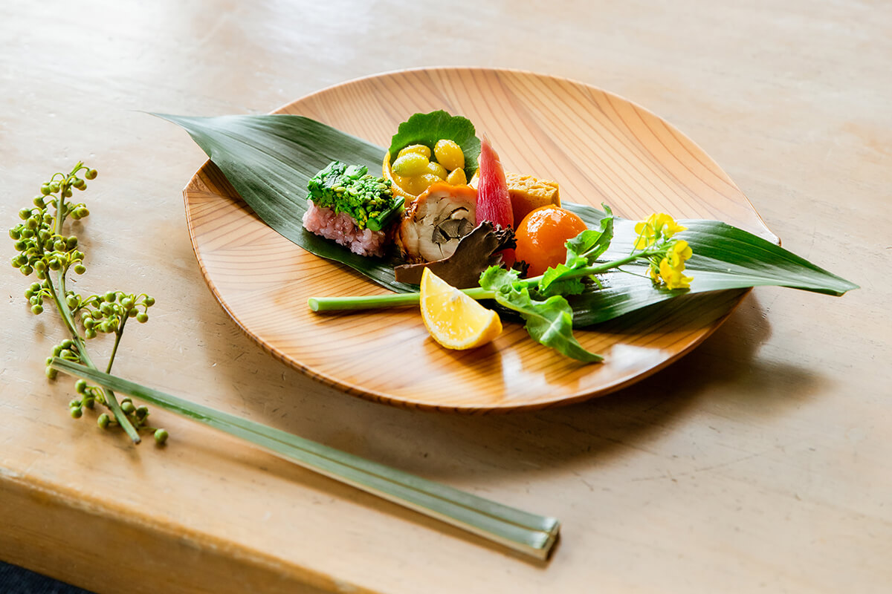
Ремёсла префектуры Оита сегодня знают далеко за пределами Японии. Чтобы понять почему, мы поехали в Юфуин, где из местной древесины делают посуду и палочки, и в Беппу, где плетут из бамбука.
Юфуин
Посуда из деревьев долины
Котловина Юфуин окружена горами, и главная из них гора Юфу. Внизу лежат поля, рощи и деревни, а вокруг растёт смешанный лиственный лес, который в Японии называют «дзоки»: деревья разных пород, обычно годные только на дрова. Из этой древесины в Юфуине и делают посуду.
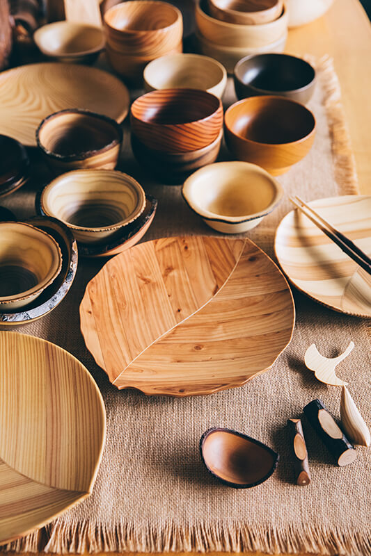
Здесь стоят мастерские, которые бережно работают с деревьями, выросшими по соседству. Можно выбрать себе миску или пару палочек и пользоваться ими дома каждый день.
Мастер
Тацуо Токимацу: «посуда хороша, когда на ней еда»
Разговор о дереве Юфуина невозможно начать без Тацуо Токимацу. Его знают по словам «нет дерева, из которого нельзя сделать посуду».
«Ателье Токи» устроено как исследовательская мастерская: под одной крышей цех и выставочный зал с магазином. Здесь Токимацу учит молодых мастеров.
«Посуда это инструмент. Красота её по-настоящему раскрывается, когда на неё положили еду»
Тацуо Токимацу
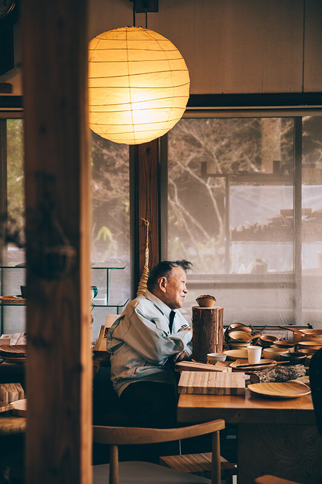
Из 200 000 видов деревьев на Земле в Японии растёт около 2000, и лишь примерно 200 из них годятся для обработки. Токимацу считает, что у каждого свой характер.
«Узор волокон, цвет, запах, фактура: эту красоту создал сам Бог. У каждого дерева своё лицо, и бесполезных деревьев нет. Работа мастера в том, чтобы своим умением добавить к этому пользу, которая сделает жизнь богаче. Красота бывает очень разной, поэтому важно ясно понимать, для кого ты делаешь вещь»
Тацуо Токимацу
Тарелка из дров
Одна из вещей, где он применил старую японскую технику, это тарелка «Счастливый лист». Двадцатилетние деревья, которые пошли бы только на дрова, распиливают на бруски толщиной 3 см, подбирают их самой красивой стороной волокон, склеивают и вытачивают форму листа.
«Если собрать вместе только лучшие стороны, появляется красота единства. В ней есть благородство, которое не уступит дереву двухсотлетнего возраста. В этом и роль мастера. Думаю, дереву это нравится»
Тацуо Токимацу
Токимацу добивается красоты как мастер и при этом думает о том, как поднять доход родного края. Молодым мастерам он объясняет, что каждая местность должна вместе, всем миром, создавать красоту, которая ей подходит.
Хозяйка рёкана Yufuin Tamanoyu знакома с Токимацу уже 30 лет и подаёт еду гостям в его посуде. Деревья разные, и сама посуда никогда не спорит с блюдом, но когда на неё выкладывают сезонные закуски, в тарелке словно отражаются окрестные пейзажи.
«Я рада, если гости чувствуют край через одно блюдо в рёкане. Простая и тёплая посуда Токимацу для них как вход в этот город»
хозяйка рёкана Yufuin Tamanoyu
По её словам, посуда, которая даёт новую жизнь простым лесным деревьям, это и есть красота Юфуина.
Лес вокруг мастерской
Когда в 1991 году Токимацу открывал мастерскую, на этом участке ничего не росло. Он своими руками посадил 200 саженцев, и теперь вокруг «Ателье Токи» шумит небольшой лес, полный птичьих голосов.
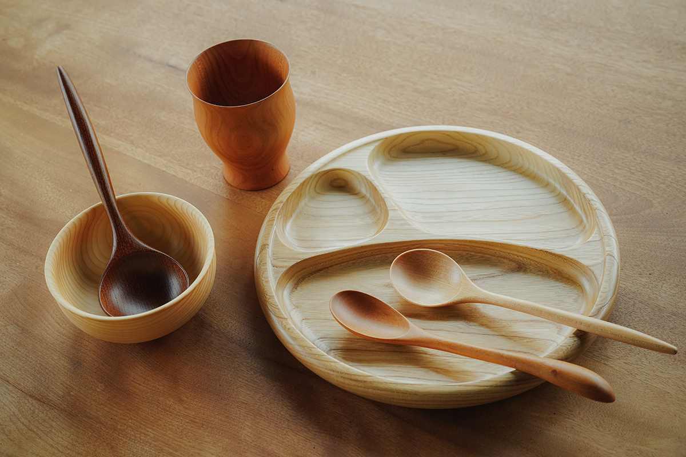
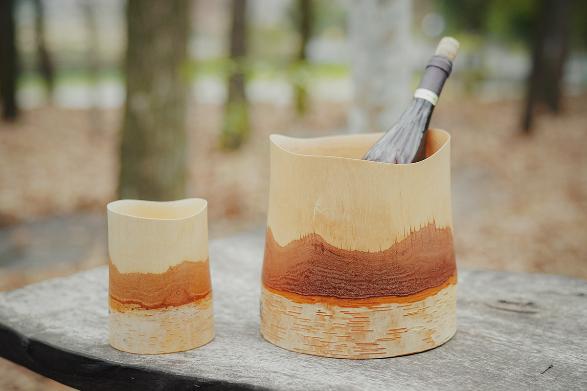
Через мастерскую прошло много стажёров, и умение работать с деревом вместе с мыслью о красоте полезных вещей разошлось отсюда по всей стране. Сегодня в магазин свозят работы мастеров, которые здесь учились, из разных уголков Японии. Отсюда можно увезти домой немного запаха юфуинского леса.
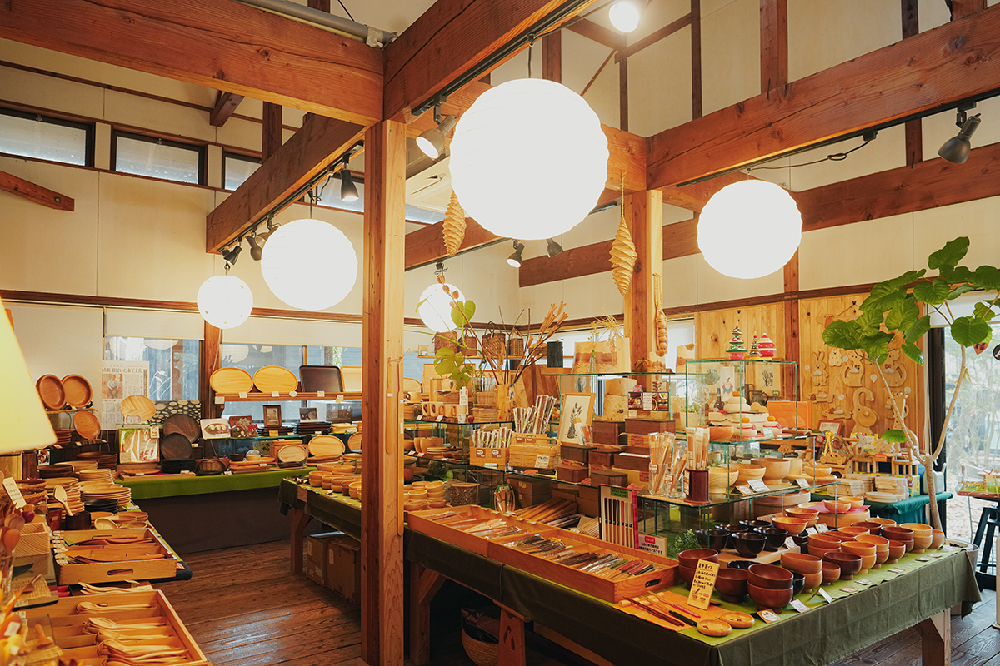
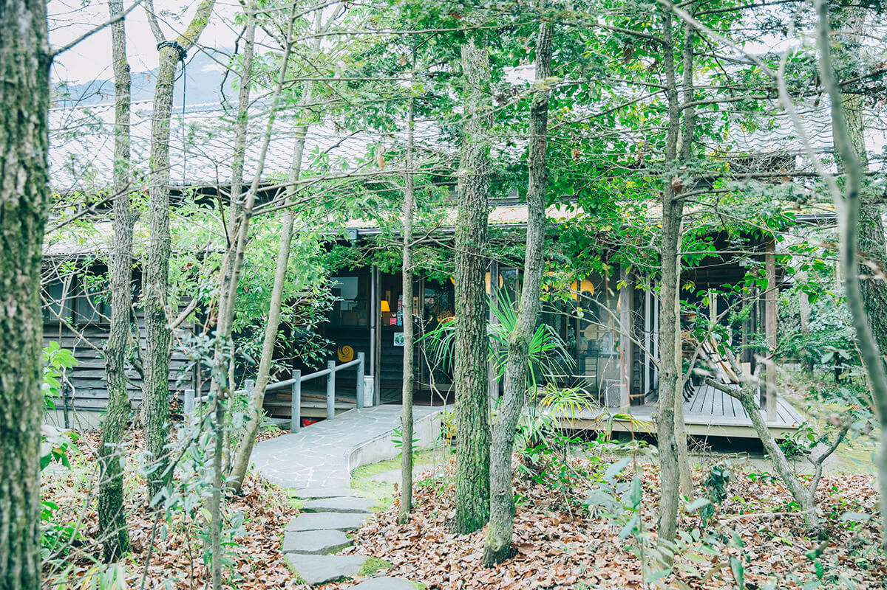
«Ателье Токи»
- Адрес
- префектура Оита, город Юфу, Юфуин, Кавками, 2666-1
- Телефон
- +81 977-84-5171, +81 80-9108-5387
- Часы работы
- 10:00–17:00
- Выходные
- четверг
Ученик
«Кия Камино»: сучки и следы жучков как узор
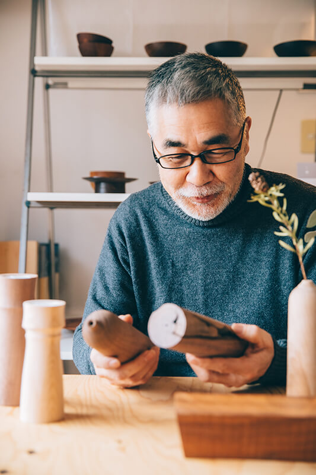
Один из мастеров, прошедших школу Токимацу, держит мастерскую «Кия Камино». В Токио он занимался дизайном мебели, потом управлял цехом Токимацу, а в 2000 году открыл своё дело.
Особенно популярны у него вазочки на один цветок для сухих букетов и подсвечники. Он берёт и древесину с сучками и ходами жучков и нарочно оставляет их как узор. В плавных тонких линиях чувствуется рука дизайнера, который много лет работал в Токио.
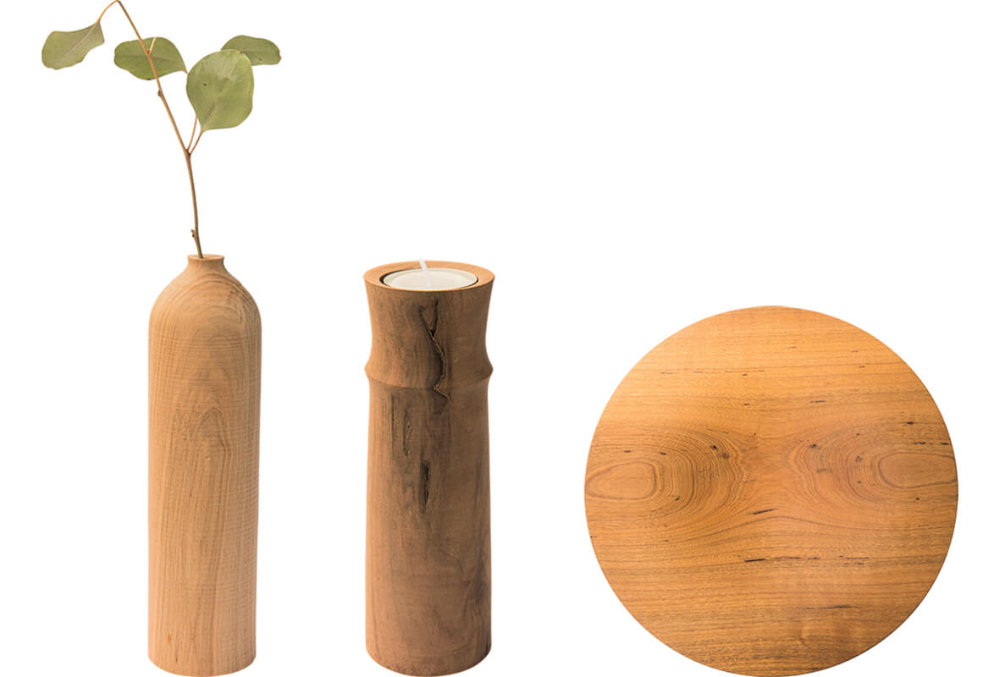
Мастерская и магазин занимают часть его дома на плато Цукахара, к северу от горы Юфу. Здесь делают подставки, чаши, подносы, столовые приборы, вазы и мелочи, а на заказ мебель и объекты.
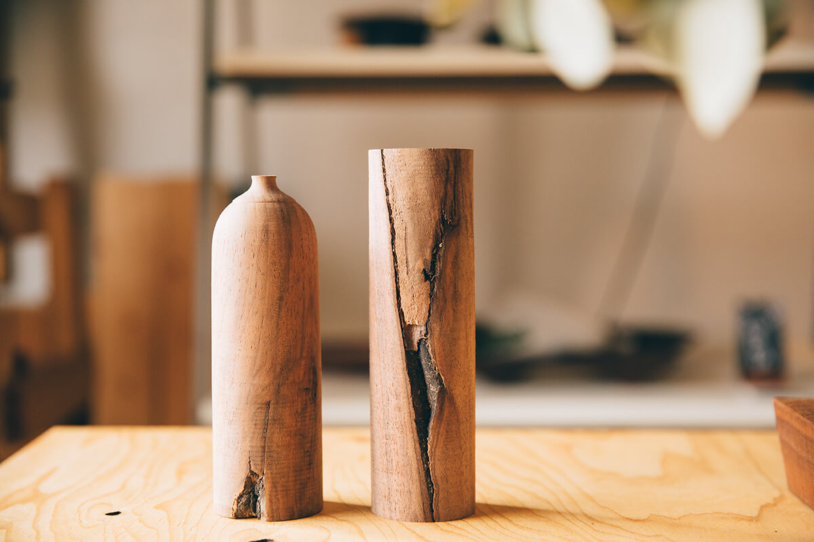
«Кия Камино»
- Адрес
- префектура Оита, город Юфу, Юфуин, Цукахара, 44-4
- Телефон
- +81 977-84-5758
- Часы работы
- 10:00–17:00
- Выходные
- нерегулярно
Палочки
«Хасия Итидзэн»: каждая пара из местного дерева
Хозяин «Хасия Итидзэн» тоже учился у Токимацу. Палочки он делает из местных деревьев: из придорожных деревьев, спиленных при ремонте дорог, и стволов, вырубленных при прореживании леса. Про каждое бревно известно, где, почему и кто его срубил, в Юфуине или в другой части префектуры Оита. Поэтому пород здесь много, около 30: конский каштан, дзельква, слива, дуб, лагерстрёмия, юдзу и другие.
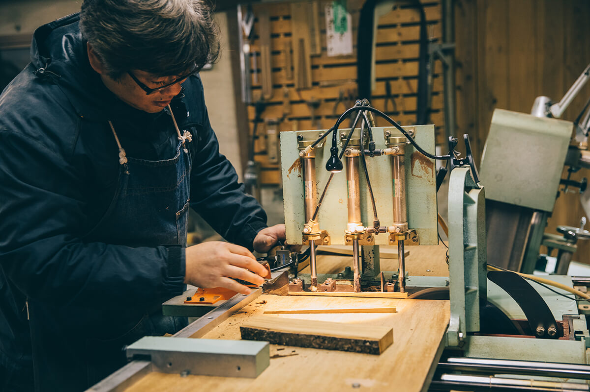
Путь от сырого ствола до пары палочек долгий. Бревно распиливают на куски нужной длины, раскалывают на доски или на четыре части и сушат около четырёх лет. Сушат естественно, в том же ритме, в каком дерево росло. Потом заготовкам придают форму на станке и каждую палочку вручную доводят напильником. Чем дольше ими пользуешься, тем лучше они лежат в руке и тем глубже становится цвет.
Палочки можно подобрать не только по породе, но и по форме, толщине и длине: под размер руки, для разных блюд и на свой вкус. Здесь принимают индивидуальные заказы, наносят надписи и проводят занятия, где можно сделать палочки самому. Остаётся найти свою пару и сразу начать ею пользоваться.
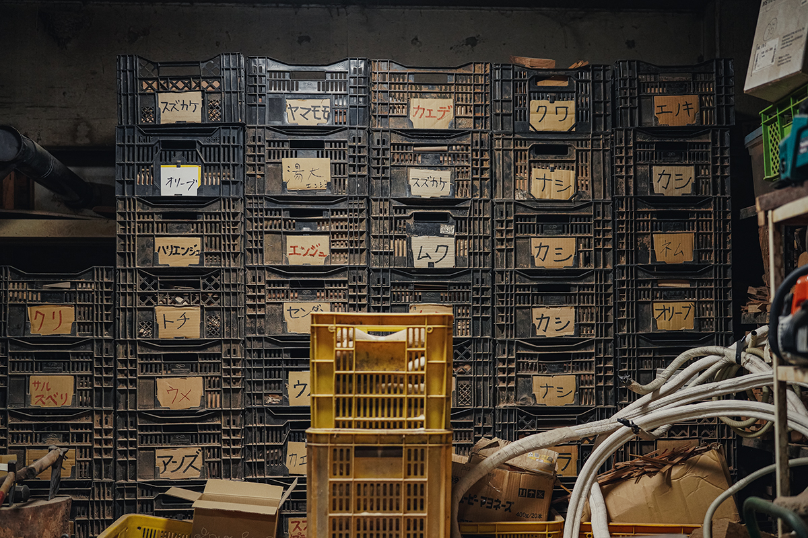
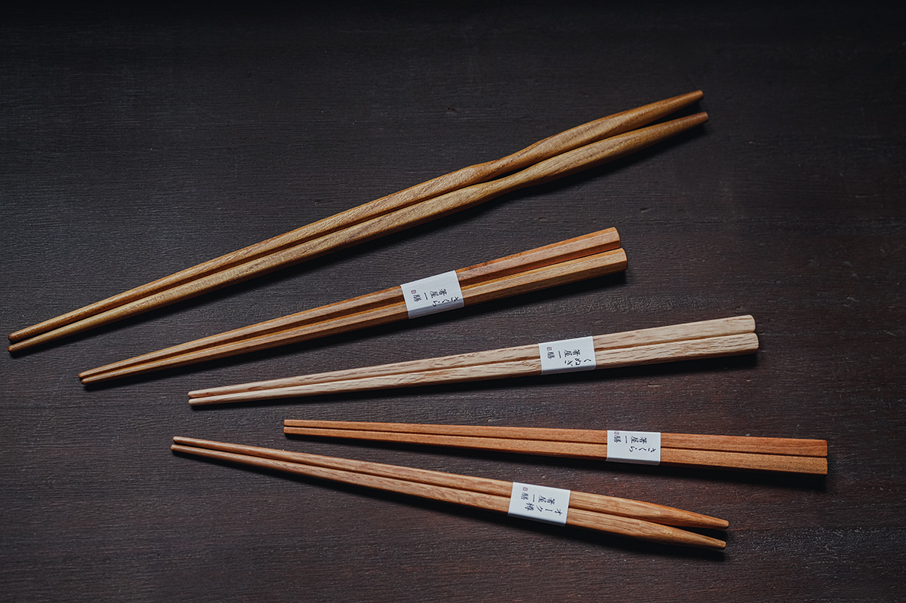
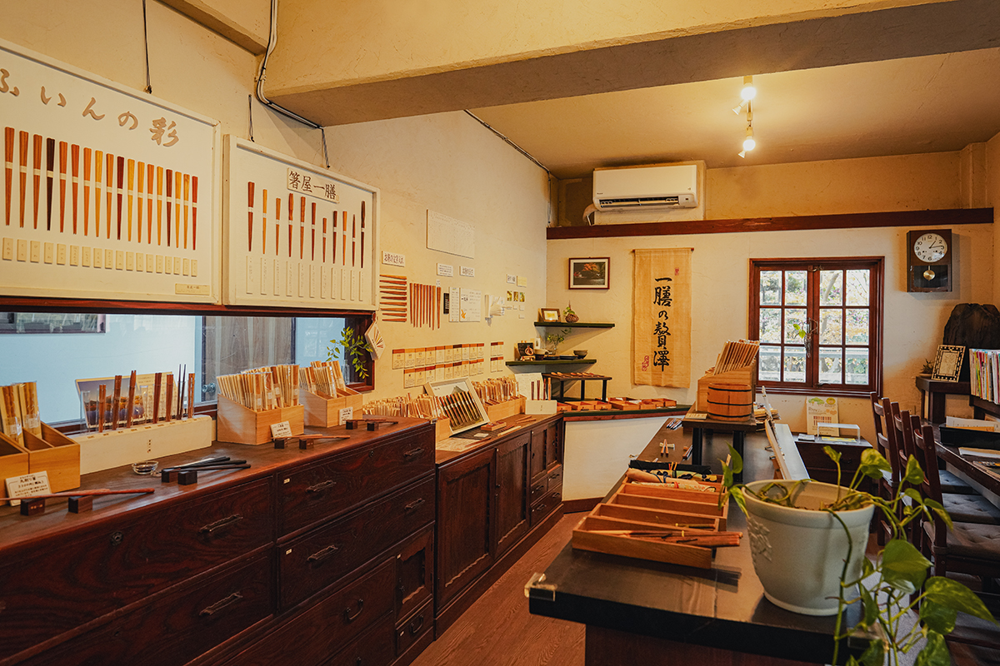
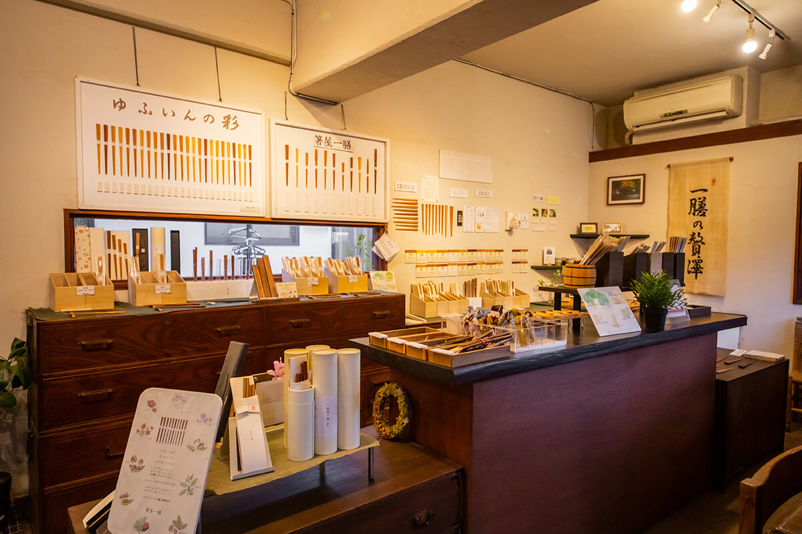
«Хасия Итидзэн»
- Адрес
- префектура Оита, город Юфу, Юфуин, Кавками, 2093-2
- Телефон
- +81 977-84-4108
- Часы работы
- 9:00–17:00
- Выходные
- без выходных
Беппу
Бамбук, которым гордится весь мир
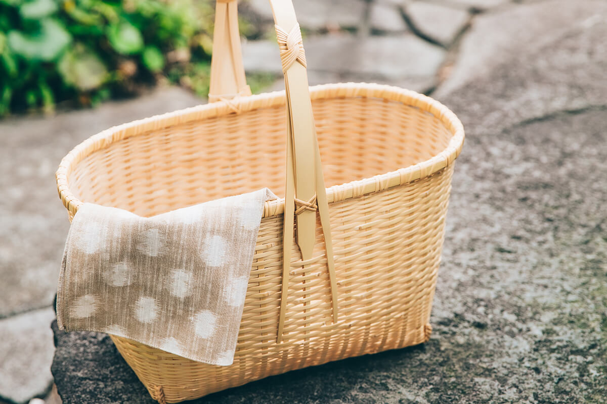
Префектура Оита первая в стране по заготовке мадакэ, японского бамбука. В Беппу работает единственная в Японии школа бамбукового ремесла, и традиция бамбукового плетения Беппу переходит здесь к молодым.
Ведущий мастер бамбукового плетения Беппу, носитель звания традиционного мастера, работает в мастерской «Тикуфуся». Он плетёт и учит молодых, а ещё часто ездит за границу показывать ремесло. Бамбуковые изделия Беппу сегодня ценят не только в Японии, но и во всём мире.
В Японии 235 видов изделий имеют статус традиционного ремесла, и бамбуковое плетение Беппу получило его в 1979 году от Министерства внешней торговли и промышленности (сегодня Министерство экономики, торговли и промышленности). В разных бамбуковых краях страны ремесло строится на местном бамбуке: мадакэ, мосо, чёрном бамбуке, горном бамбуке. В Беппу главный материал это мадакэ из префектуры Оита. Из стеблей выводят масло и сушат их, пока они не станут цвета слоновой кости, затем режут тонкие узкие полоски и плетут. Частое плетение и изящные изгибы получаются только из гибкого и прочного мадакэ.
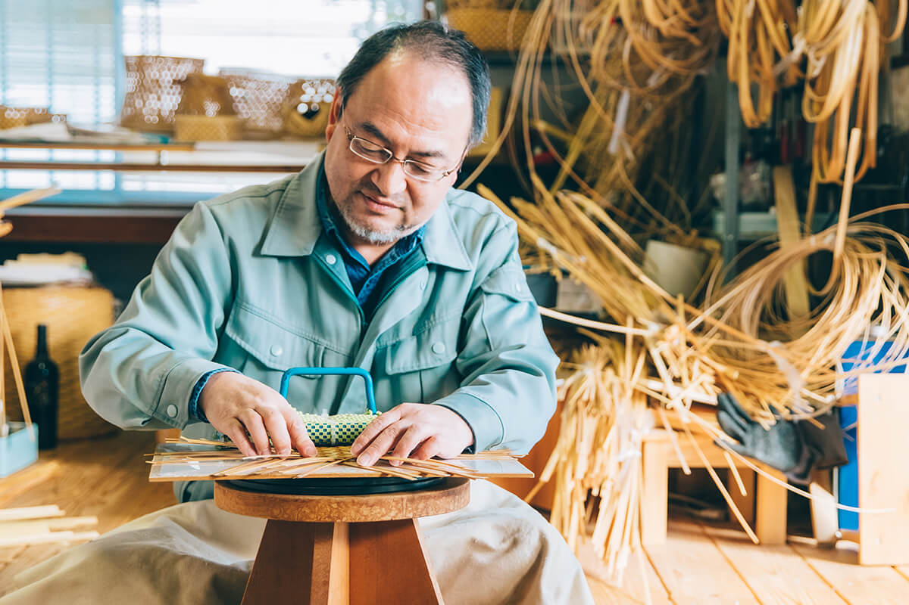
Ровные полоски
Главная основа ремесла, по словам мастера, это одинаковые полоски бамбука.
«Стебель толщиной около 10 сантиметров одним ножом для раскалывания бамбука превращают в очень тонкие полоски. Ширина и толщина зависят от того, что ты делаешь, но красивая вещь получается только тогда, когда все полоски одинаковые»
мастер бамбукового плетения
Полоски укладывают по линиям, начерченным на основе, прижимают грузами и плетут по одной, терпеливо и аккуратно. Высыхая, бамбук трескается, поэтому его всё время сбрызгивают водой из пульверизатора. Узоров плетения около 200: например, «ёцумэ-ами» с квадратными ячейками и «муцумэ-ами» с шестиугольными. Из сочетания ширины полосок и узора получаются очень разные вещи, и в этом главная прелесть бамбукового плетения. Для новой работы рисунок есть, но в итоге всё решают чутьё рук и вкус, поэтому даже такой опытный мастер делает несколько пробных вариантов.
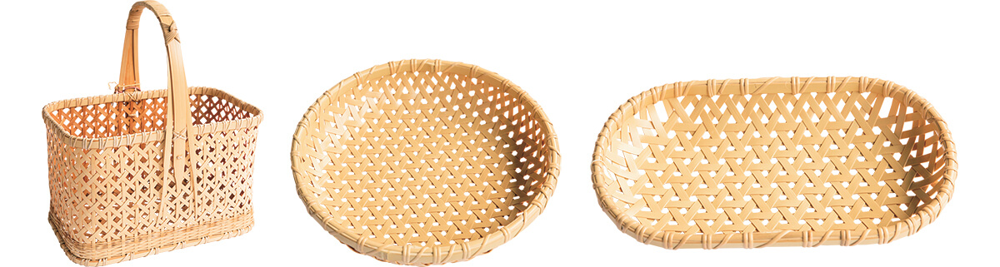
Две тысячи лет плетения
По преданию, плетёные корзины и решета в Беппу использовали уже в I веке. В эпоху Муромати (XIV–XVI века) здесь делали корзины для бродячих торговцев. В эпоху Эдо (1603–1868) Беппу прославился как лучший онсэн страны, и сюда со всей Японии ехали на тодзи (лечение водами). Бамбуковые вещи, которыми гости пользовались, пока жили здесь, например корзины для варёного риса и решета для промывки риса, охотно увозили как сувениры, и так о бамбуке Беппу узнала вся страна. В эпоху Мэйдзи (1868–1912) плетение переросло сувениры и стало художественным ремеслом. Позже открыли «Префектуральный центр обучения бамбуковому ремеслу Оиты», единственную в Японии профессиональную школу бамбука, и сюда стала съезжаться молодёжь со всей страны.
Мастер тоже из тех, кого покорил бамбук. По его словам, бамбук Беппу трогает людей именно благодаря этой истории.
«Прелесть бамбука в том, что он одновременно мягкий и твёрдый. Из одного стебля можно сделать что угодно. А со временем вещь стареет, и её любишь всё больше»
мастер бамбукового плетения
Сегодня рядом с мастером работают двое сотрудников. Внимание привлекает и проект молодых мастеров BEPPU BAMBOO JAPAN: бамбук Беппу переходит к новому поколению и уверенно выходит в мир.
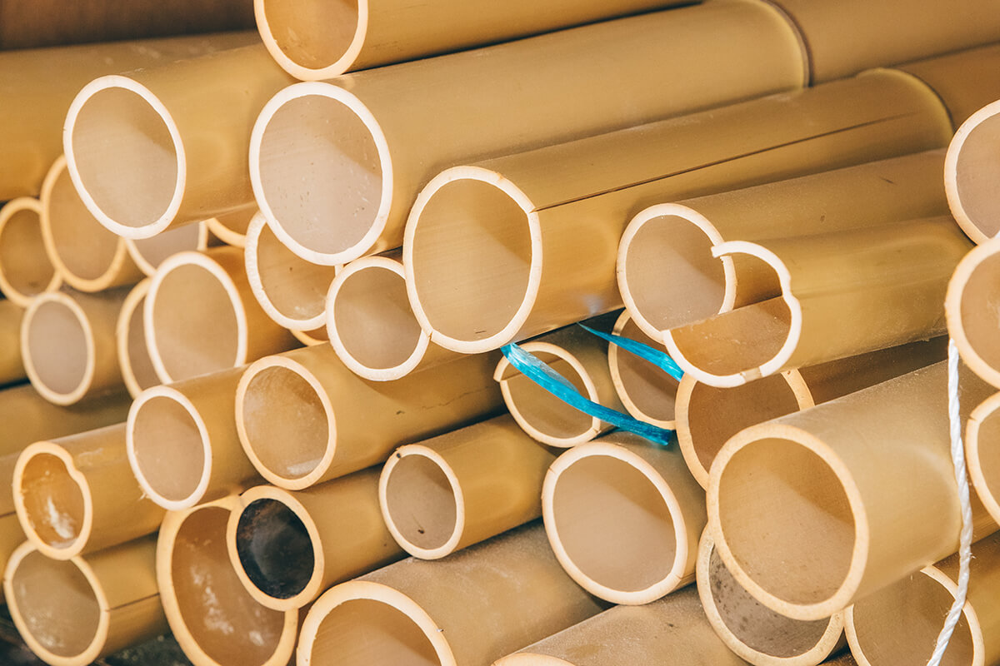
Мастерская «Тикуфуся»
- Адрес
- префектура Оита, Беппу, Каннава-Ками, 7
- Сайт
- chikufusha.com
Купить работы мастера можно, например, в «Фудзия Ханаямомо», зале и галерее в Каннаве.
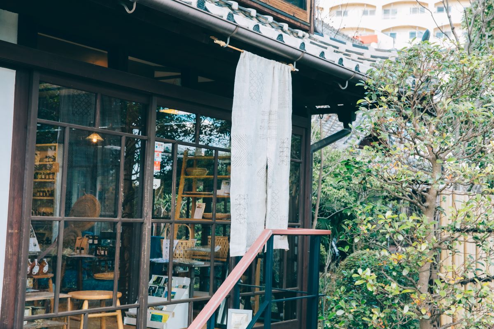
«Фудзия Ханаямомо», зал и галерея
- Адрес
- префектура Оита, Беппу, Каннава-Ками, 1
- Телефон
- +81 977-66-3251
- Часы работы
- 10:00–17:00
- Выходные
- понедельник, вторник
Фото: Маико Фукуи, Адзуса Сигэнобу.